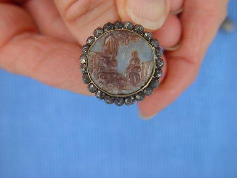
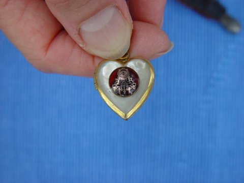
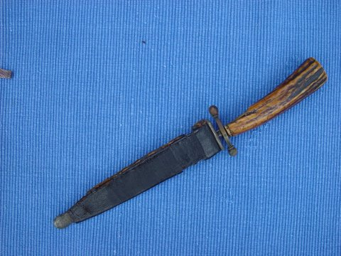
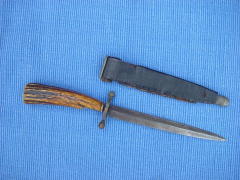

1. "Here is the gold thimble and case belonging to Carrie Rudge Coble given by her to me... I'm sure the... thimble came from the Rudge Store." [Brenda nee Coble Robinson, her granddaughter].

2. "Here is the gold thimble and case belonging to Carrie Rudge Coble given by her to me... I'm sure the... thimble came from the Rudge Store." [Brenda nee Coble Robinson, her granddaughter].

3. "The button from her [Carrie nee Rudge Coble's] wedding dress given to all her children that my mother had made into a ring (Rebecca at the well)." (Brenda nee Coble Robinson)

4. "The gold locket with a picture of a railroad engine given to Louise Coble by her father (John Bunyan Coble sr.) that she gave to me." (Brenda nee Coble Robinson)

5. "The gold locket with a picture of a railroad engine given to Louise Coble by her father (John Bunyan Coble sr.) that she gave to me." (Brenda nee Coble Robinson)
6. "The card case given to me by Aunt Kate Rudge Griffith... I'm sure the card case... came from the Rudge Store" (Brenda nee Coble Robinson)

7. "The card case given to me by Aunt Kate Rudge Griffith... I'm sure the card case... came from the Rudge Store" (Brenda nee Coble Robinson)

8. "The dagger that belonged to [John] William Rudge that folklore has it on a Confederate blockade runner. It would be nice to know more about those circumstances. I also don't know when we got the knife but I think it was while my father was living." (Brenda nee Coble Robinson)

9. "The dagger that belonged to [John] William Rudge that folklore has it on a Confederate blockade runner. It would be nice to know more about those circumstances. I also don't know when we got the knife but I think it was while my father was living." (Brenda nee Coble Robinson)

10. "The dagger that belonged to [John] William Rudge that folklore has it on a Confederate blockade runner. It would be nice to know more about those circumstances. I also don't know when we got the knife but I think it was while my father was living." (Brenda nee Coble Robinson)

11. "The dagger that belonged to [John] William Rudge that folklore has it on a Confederate blockade runner. It would be nice to know more about those circumstances. I also don't know when we got the knife but I think it was while my father was living." (Brenda nee Coble Robinson)
12. Clara nee Bivens Coble's gravestone in the Monroe City Suncrest Cemetery, Monroe, NC.
13. John William and Caroline Virginia nee Pae Rudge's gravestone in the Monroe City Suncrest Cemetery, Monroe, NC.

14. John Bunyan and Carrie nee Rudge Coble's house.
15. John Bunyan and Carrie nee Rudge Coble's house.

16. John Bunyan and Carrie nee Rudge Coble's house.

17. "Aunt Kate Rudge Griffith's home on Windsor Street in Monroe" (Brenda nee Coble Robinson)
18. Brenda nee Coble Robinson standing in front of Clara nee Bivens Coble's home.
19. Outside of the old Union County Courthouse, Monroe, NC.
20. Courtroom inside the old Union County Courthouse, Monroe, NC.
21. Courtroom inside the old Union County Courthouse, Monroe, NC.
22. Wall ornament inside the old Union County Courthouse, Monroe, NC.
23. Pilar inside the old Union County Courthouse, Monroe, NC.
24. Bell tower of the old Union County Courthouse, Monroe, NC.
25. Outside of the old Union County Courthouse, Monroe, NC.

26. Marker for the Bivens and Coble plot in the Monroe City Suncrest Cemetery, Monroe, NC.

27. Clara nee Bivens Coble's gravestone in the Monroe City Suncrest Cemetery, Monroe, NC.
28. Paul Wadsworth Coble's gravestone in the Monroe City Suncrest Cemetery, Monroe, NC.

29. John Bunyan Coble's gravestone in the Monroe City Suncrest Cemetery, Monroe, NC.
30. Carrie nee Rudge Coble's gravestone in the Monroe City Suncrest Cemetery, Monroe, NC.
31. John Bunyan and Carrie nee Rudge Coble's house.
Last updated on 4 Jul 2005.